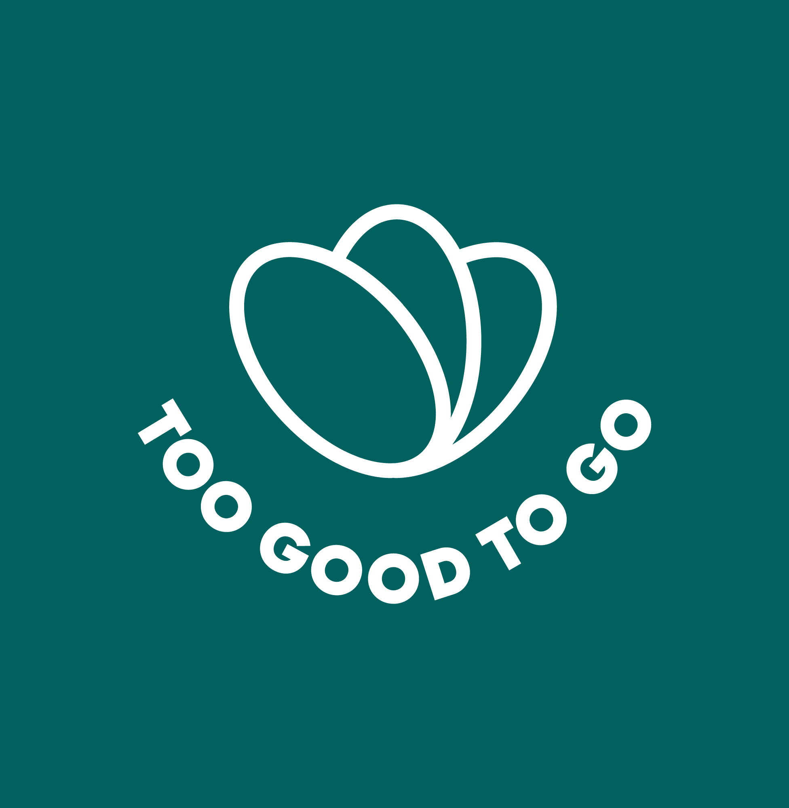

Organisationer
Vi samarbejder med disse organisationer!
Too Good To Go
Too Good To Go er en virksomhed som samarbejder med resturanter verden over, for at sikre madspild.
Stop Spild Af Mad

Stop Spild af Mad er en organisation der hjælper forbrugere til at undgå madspild i hjemmet